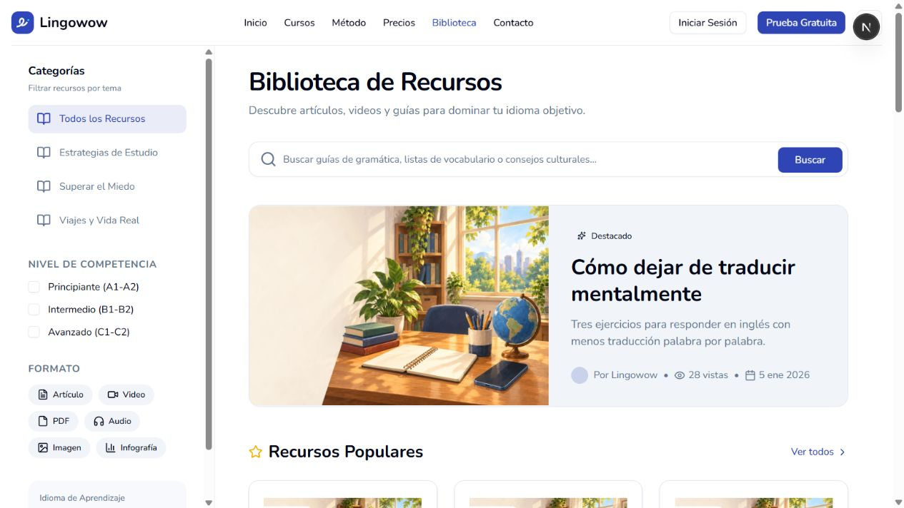
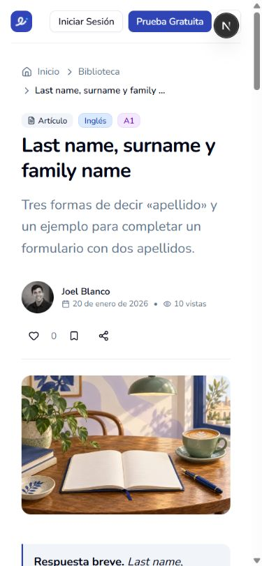
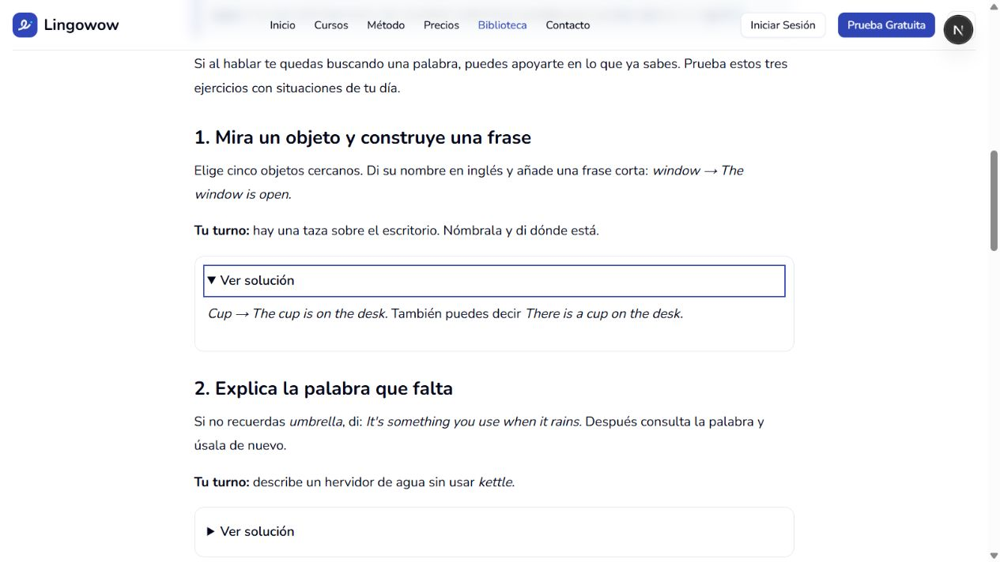
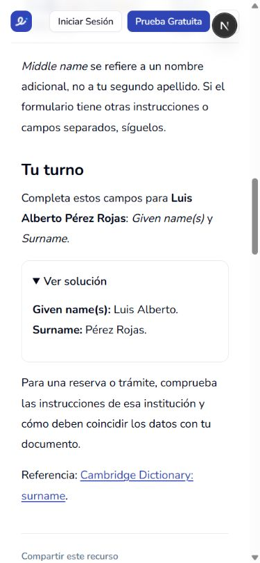
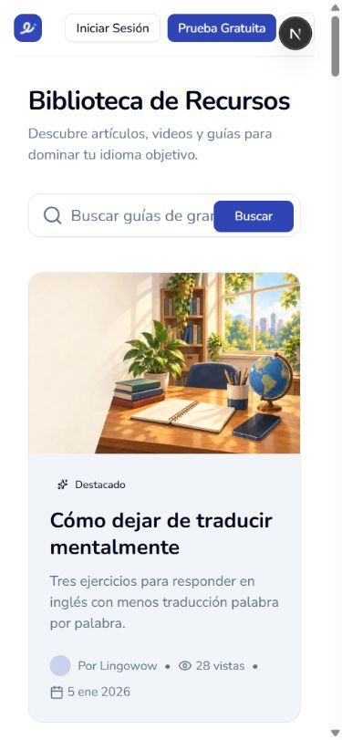

9 de octubre de 2026. Cambios locales; todavía no publicados ni importados a producción. Las capturas muestran los componentes reales de biblioteca y lector, alimentados temporalmente con una copia de los 19 artículos públicos y el contenido revisado. El endpoint de prueba se eliminó antes de la entrega.
La familia de ilustración aprobada está en C:/Users/ACER/.codex/worktrees/lesson-guided-pilot/web/docs/design/graphic-guide-v1/ y content-format-mockups/v3/. Se revisaron las escenas y el lenguaje de tablas/lectura de v3. El sistema público conserva su identidad actual según design.md; las guías de lecciones se usan para continuidad del arte, no para afirmar que existe una maqueta aprobada del blog.
Se reutilizan ocho escenas del proyecto, sin personajes nuevos, sin texto rasterizado, sin recortes de ambientes. Exportación WebP de hasta 1200 px. La composición específica de las páginas públicas es una adaptación revisada y autorizada por el usuario el 9 de octubre de 2026.

La escena conserva mesa, ventana, libros, planta, globo y objetos. El título y el resumen son texto real separado del arte. Se elimina la superposición oscura y se mantiene el entorno completo.

Cuaderno, lámpara, taza, planta y ventana conservados; texto y controles fuera de la imagen. Título compacto, autor, acciones, una columna y escena completa.



| Pantalla | Requisito | Resultado |
|---|---|---|
| Biblioteca | Escena completa, título legible separado, conservación de búsqueda y filtros de escritorio | Verificado visualmente en escritorio y móvil; sin recortes de entorno. |
| Artículo | Una columna de lectura, sin oferta lateral; autor y acciones conservados | Verificado visualmente en escritorio y móvil. |
| Lectura | Párrafos legibles, respuesta breve, ejemplos, tablas y práctica | Cuerpo medido a 17 px. Contenido revisado de 19 artículos; comprobación visual representativa de apellidos y destacado. |
| Práctica | Solución opcional, teclado, foco y contenido accesible | Verificado con clic en móvil y Enter en escritorio; estados cerrado y abierto. |
| Móvil | Sin desbordamiento de página, acciones que envuelven, entorno completo | 390 px de viewport y 375 px de scrollWidth por la barra del navegador. Tabla con desplazamiento interno; cabecera compacta. |
| Arte | Identidades y entornos aprobados | No se introducen personajes. Escenas existentes; no se cambia estilo ni composición de los originales. |
| Contenido | Sin JSON visible; 15 artículos vacíos recuperados y 4 existentes revisados | Resolver y datos cubiertos por pruebas; 19 revisiones preparadas. Producción pendiente de importación. |
| Acceso | /blog público sin sesión | Ruta permitida y redirección a /library con parámetros preservados. No se amplían permisos de recursos privados. |
Herramienta: tools/blog/update-editorial.ts. Por defecto es de lectura; con --apply --expected=<snapshot-revisado.json> --backup=<archivo-nuevo.json> comprueba que ningún autor cambió el texto desde el snapshot revisado, respalda las filas y aplica todo en una transacción. Preserva IDs, URLs, autor, fechas de publicación, acceso y métricas. Se debe ejecutar usando la configuración confirmada de la aplicación en el VPS, junto con el despliegue del lector y los ocho activos.